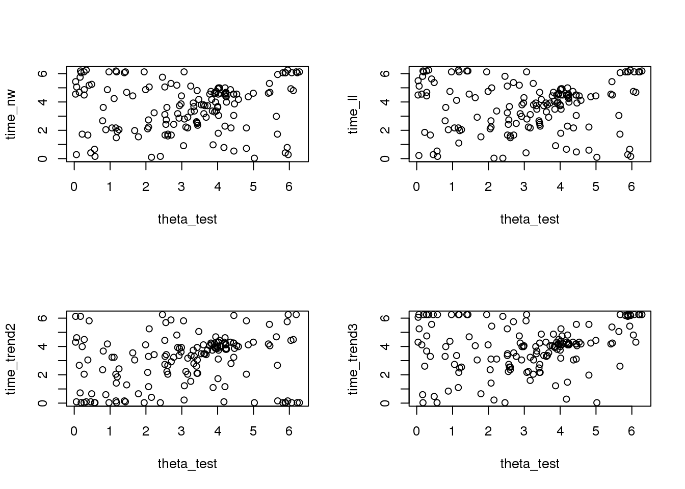
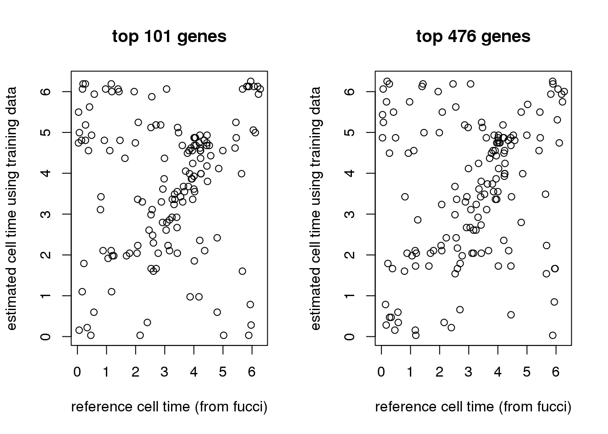
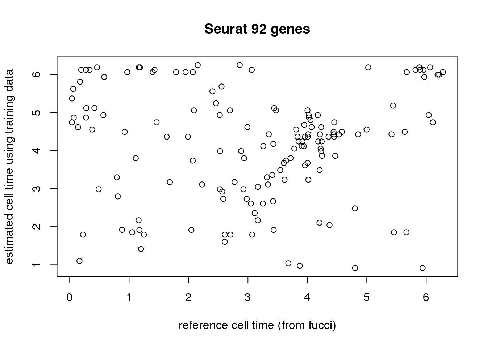

Model training: number of genes and cyclical function fit
Joyce Hsiao
Last updated: 2018-06-21
Code version: e1541b2
Compare npcirc.nw vs trendfilter
Extract data from the top 101 genes identified
library(Biobase)
df <- readRDS(file="../data/eset-final.rds")
pdata <- pData(df)
fdata <- fData(df)
# select endogeneous genes
counts <- exprs(df)[grep("ENSG", rownames(df)), ]
log2cpm.all <- t(log2(1+(10^6)*(t(counts)/pdata$molecules)))
#macosko <- readRDS("data/cellcycle-genes-previous-studies/rds/macosko-2015.rds")
counts <- counts[,order(pdata$theta)]
log2cpm.all <- log2cpm.all[,order(pdata$theta)]
pdata <- pdata[order(pdata$theta),]
log2cpm.quant <- readRDS("../output/npreg-trendfilter-quantile.Rmd/log2cpm.quant.rds")
# select external validation samples
set.seed(99)
nvalid <- round(ncol(log2cpm.quant)*.15)
ii.valid <- sample(1:ncol(log2cpm.quant), nvalid, replace = F)
ii.nonvalid <- setdiff(1:ncol(log2cpm.quant), ii.valid)
log2cpm.quant.nonvalid <- log2cpm.quant[,ii.nonvalid]
log2cpm.quant.valid <- log2cpm.quant[,ii.valid]
theta <- pdata$theta
names(theta) <- rownames(pdata)
# theta.nonvalid <- theta_moved[ii.nonvalid]
theta.nonvalid <- theta[ii.nonvalid]
theta.valid <- theta[ii.valid]
sig.genes <- readRDS("../output/npreg-trendfilter-quantile.Rmd/out.stats.ordered.sig.101.rds")
expr.sig <- log2cpm.quant.nonvalid[rownames(log2cpm.quant.nonvalid) %in% rownames(sig.genes), ]
expr.sig <- expr.sig[1:10,]
# get predicted times
# set training samples
source("../peco/R/primes.R")
source("../peco/R/partitionSamples.R")
parts <- partitionSamples(1:ncol(log2cpm.quant.nonvalid), runs=5,
nsize.each = rep(151,5))
part_indices <- parts$partitionsFitting
source("../peco/R/fit.trendfilter.generic.R")
source("../peco/R/cycle.npreg.R")
source("../code/utility.R")fits.nw <- vector("list", 5)
for (run in 1:5) {
print(run)
# fitting training data
Y_train <- expr.sig[,part_indices[[run]]$train]
theta_train <- theta.nonvalid[part_indices[[run]]$train]
fit.train <- cycle.npreg.insample(Y = Y_train,
theta = theta_train,
ncores=10,
method.trend="npcirc.nw")
# fitting test data
Y_test <- expr.sig[,part_indices[[run]]$test]
theta_test <- theta.nonvalid[part_indices[[run]]$test]
fit.test <- cycle.npreg.outsample(Y_test=Y_test,
sigma_est=fit.train$sigma_est,
funs_est=fit.train$funs_est,
method.grid = "uniform",
method.trend="npcirc.nw",
ncores=12)
fits.nw[[run]] <- list(fit.train=fit.train,
fit.test=fit.test)
}
saveRDS(fits.nw, file = "../output/method-npreg-prelim-results.Rmd/fits.nw.rds")
fits.trend2 <- vector("list", 5)
for (run in 1:5) {
print(run)
# fitting training data
Y_train <- expr.sig[,part_indices[[run]]$train]
theta_train <- theta.nonvalid[part_indices[[run]]$train]
fit.train <- cycle.npreg.insample(Y = Y_train,
theta = theta_train,
polyorder=2,
ncores=10,
method.trend="trendfilter")
# fitting test data
Y_test <- expr.sig[,part_indices[[run]]$test]
theta_test <- theta.nonvalid[part_indices[[run]]$test]
fit.test <- cycle.npreg.outsample(Y_test=Y_test,
sigma_est=fit.train$sigma_est,
funs_est=fit.train$funs_est,
method.grid = "uniform",
method.trend="trendfilter",
polyorder=2,
ncores=12)
fits.trend2[[run]] <- list(fit.train=fit.train,
fit.test=fit.test)
}
saveRDS(fits.trend2, file = "../output/method-npreg-prelim-results.Rmd/fits.trend2.rds")
fits.trend3 <- vector("list", 5)
for (run in 1:5) {
print(run)
# fitting training data
Y_train <- expr.sig[,part_indices[[run]]$train]
theta_train <- theta.nonvalid[part_indices[[run]]$train]
fit.train <- cycle.npreg.insample(Y = Y_train,
theta = theta_train,
polyorder=3,
ncores=10,
method.trend="trendfilter")
# fitting test data
Y_test <- expr.sig[,part_indices[[run]]$test]
theta_test <- theta.nonvalid[part_indices[[run]]$test]
fit.test <- cycle.npreg.outsample(Y_test=Y_test,
sigma_est=fit.train$sigma_est,
funs_est=fit.train$funs_est,
method.grid = "uniform",
method.trend="trendfilter",
ncores=12)
fits.trend3[[run]] <- list(fit.train=fit.train,
fit.test=fit.test)
}
saveRDS(fits.trend3, file = "../output/method-npreg-prelim-results.Rmd/fits.trend3.rds")load results
fits.nw <- readRDS(file = "../output/method-npreg-prelim-results.Rmd/fits.nw.rds")
fits.trend2 <- readRDS(file = "../output/method-npreg-prelim-results.Rmd/fits.trend2.rds")
fits.trend3 <- readRDS(file = "../output/method-npreg-prelim-results.Rmd/fits.trend3.rds")Results
run=1
Y_test <- expr.sig[,part_indices[[run]]$test]
theta_test <- theta.nonvalid[part_indices[[run]]$test]
time_nw <- fits.nw[[1]]$fit.test$cell_times_est[match(names(theta_test),
names(fits.nw[[1]]$fit.test$cell_times_est))]
time_trend2 <- fits.trend2[[1]]$fit.test$cell_times_est[match(names(theta_test),
names(fits.trend2[[1]]$fit.test$cell_times_est))]
time_trend3 <- fits.trend3[[1]]$fit.test$cell_times_est[match(names(theta_test),
names(fits.trend3[[1]]$fit.test$cell_times_est))]
par(mfrow=c(2,2))
plot(theta_test, time_nw)
plot(theta_test, time_trend2)
plot(theta_test, time_trend3)
Misclassification rate
xy_time <- lapply(1:5, function(run) {
xy <- data.frame(
ref_time=theta.nonvalid[part_indices[[run]]$test],
pred_time_nw=fits.nw[[run]]$fit.test$cell_times_est[
match(names(theta.nonvalid[part_indices[[run]]$test]),
names(fits.nw[[run]]$fit.test$cell_times_est))],
pred_time_trend2=fits.trend2[[run]]$fit.test$cell_times_est[
match(names(theta.nonvalid[part_indices[[run]]$test]),
names(fits.trend2[[run]]$fit.test$cell_times_est))],
pred_time_trend3=fits.trend3[[run]]$fit.test$cell_times_est[
match(names(theta.nonvalid[part_indices[[run]]$test]),
names(fits.trend3[[run]]$fit.test$cell_times_est))])
return(xy)
})
for (i in 1:5) {
xy_time[[i]]$diff_time_nw <- pmin(
abs(xy_time[[i]]$pred_time_nw-xy_time[[i]]$ref_time),
abs(xy_time[[i]]$pred_time_nw-(2*pi-xy_time[[i]]$ref_time)))
xy_time[[i]]$diff_time_trend2 <- pmin(
abs(xy_time[[i]]$pred_time_trend2-xy_time[[i]]$ref_time),
abs(xy_time[[i]]$pred_time_trend2-(2*pi-xy_time[[i]]$ref_time)))
xy_time[[i]]$diff_time_trend3 <- pmin(
abs(xy_time[[i]]$pred_time_trend3-xy_time[[i]]$ref_time),
abs(xy_time[[i]]$pred_time_trend3-(2*pi-xy_time[[i]]$ref_time)))
}
mean(sapply(xy_time, function(x) mean(x$diff_time_nw))/2/pi)[1] 0.1236166mean(sapply(xy_time, function(x) mean(x$diff_time_trend2))/2/pi)[1] 0.1364968mean(sapply(xy_time, function(x) mean(x$diff_time_trend3))/2/pi)[1] 0.1329185npcirc.nw on top 101 genes
Extract data from the top 101 genes identified
library(Biobase)
df <- readRDS(file="../data/eset-final.rds")
pdata <- pData(df)
fdata <- fData(df)
# select endogeneous genes
counts <- exprs(df)[grep("ENSG", rownames(df)), ]
log2cpm.all <- t(log2(1+(10^6)*(t(counts)/pdata$molecules)))
#macosko <- readRDS("data/cellcycle-genes-previous-studies/rds/macosko-2015.rds")
counts <- counts[,order(pdata$theta)]
log2cpm.all <- log2cpm.all[,order(pdata$theta)]
pdata <- pdata[order(pdata$theta),]
log2cpm.quant <- readRDS("../output/npreg-trendfilter-quantile.Rmd/log2cpm.quant.rds")
# select external validation samples
set.seed(99)
nvalid <- round(ncol(log2cpm.quant)*.15)
ii.valid <- sample(1:ncol(log2cpm.quant), nvalid, replace = F)
ii.nonvalid <- setdiff(1:ncol(log2cpm.quant), ii.valid)
log2cpm.quant.nonvalid <- log2cpm.quant[,ii.nonvalid]
log2cpm.quant.valid <- log2cpm.quant[,ii.valid]
theta <- pdata$theta
names(theta) <- rownames(pdata)
# theta.nonvalid <- theta_moved[ii.nonvalid]
theta.nonvalid <- theta[ii.nonvalid]
theta.valid <- theta[ii.valid]
sig.genes.101 <- readRDS("../output/npreg-trendfilter-quantile.Rmd/out.stats.ordered.sig.101.rds")
expr.sig.101 <- log2cpm.quant.nonvalid[rownames(log2cpm.quant.nonvalid) %in% rownames(sig.genes.101), ]
sig.genes.476 <- readRDS("../output/npreg-trendfilter-quantile.Rmd/out.stats.ordered.sig.476.rds")
expr.sig.476 <- log2cpm.quant.nonvalid[rownames(log2cpm.quant.nonvalid) %in% rownames(sig.genes.476), ]
# get Seurat genes
library(biomaRt)
ensembl <- useMart("ensembl",dataset="hsapiens_gene_ensembl")
symbols <- getBM(attributes=c('ensembl_gene_id','hgnc_symbol'),
filter='ensembl_gene_id',
values = rownames(log2cpm.all), mart = ensembl)
head(symbols) ensembl_gene_id hgnc_symbol
1 ENSG00000000003 TSPAN6
2 ENSG00000000419 DPM1
3 ENSG00000000457 SCYL3
4 ENSG00000000460 C1orf112
5 ENSG00000001036 FUCA2
6 ENSG00000001084 GCLCcc.genes.symbol <- readLines(con = "../data/cellcycle-genes-previous-studies/seurat_cellcycle/regev_lab_cell_cycle_genes.txt")
# s.genes <- cc.genes[1:43]
# g2m.genes <- cc.genes[44:97]
cc.genes.ensembl <- symbols$ensembl_gene_id[which(symbols$hgnc_symbol %in% cc.genes.symbol)]
expr.seurat <- log2cpm.quant.nonvalid[rownames(log2cpm.quant.nonvalid) %in% cc.genes.ensembl, ]
# get predicted times
# set training samples
source("../peco/R/primes.R")
source("../peco/R/partitionSamples.R")
parts <- partitionSamples(1:ncol(log2cpm.quant.nonvalid), runs=5,
nsize.each = rep(151,5))
part_indices <- parts$partitionsoverlap between our top genes and seurat genes
library(VennDiagram)
grid.draw(venn.diagram(list(
"peco top 101 genes" = rownames(sig.genes.101),
"Seurat 92 genes" = cc.genes.ensembl), filename=NULL))
grid.draw(venn.diagram(list(
"peco top 476 genes" = rownames(sig.genes.476),
"Seurat 92 genes" = cc.genes.ensembl), filename=NULL))Fitting
source("../peco/R/fit.trendfilter.generic.R")
source("../peco/R/cycle.npreg.R")
source("../code/utility.R")fits.101 <- vector("list", 5)
for (run in 1:5) {
print(run)
# fitting training data
Y_train <- expr.sig.101[,part_indices[[run]]$train]
theta_train <- theta.nonvalid[part_indices[[run]]$train]
fit.train <- cycle.npreg.insample(Y = Y_train,
theta = theta_train,
ncores=10,
method.trend="npcirc.nw")
# fitting test data
Y_test <- expr.sig.101[,part_indices[[run]]$test]
theta_test <- theta.nonvalid[part_indices[[run]]$test]
fit.test <- cycle.npreg.outsample(Y_test=Y_test,
sigma_est=fit.train$sigma_est,
funs_est=fit.train$funs_est,
method.grid = "uniform",
method.trend="npcirc.nw",
ncores=12)
fits.101[[run]] <- list(fit.train=fit.train,
fit.test=fit.test)
}
saveRDS(fits.101, file = "../output/method-npreg-prelim-results.Rmd/fits.101.rds")
fits.476 <- vector("list", 5)
for (run in 1:5) {
print(run)
# fitting training data
Y_train <- expr.sig.476[,part_indices[[run]]$train]
theta_train <- theta.nonvalid[part_indices[[run]]$train]
fit.train <- cycle.npreg.insample(Y = Y_train,
theta = theta_train,
ncores=10,
method.trend="npcirc.nw")
# fitting test data
Y_test <- expr.sig.476[,part_indices[[run]]$test]
theta_test <- theta.nonvalid[part_indices[[run]]$test]
fit.test <- cycle.npreg.outsample(Y_test=Y_test,
sigma_est=fit.train$sigma_est,
funs_est=fit.train$funs_est,
method.grid = "uniform",
method.trend="npcirc.nw",
ncores=12)
fits.476[[run]] <- list(fit.train=fit.train,
fit.test=fit.test)
}
saveRDS(fits.476, file = "../output/method-npreg-prelim-results.Rmd/fits.476.rds")
fits.seurat <- vector("list", 5)
for (run in 1:5) {
print(run)
# fitting training data
Y_train <- expr.seurat[,part_indices[[run]]$train]
theta_train <- theta.nonvalid[part_indices[[run]]$train]
fit.train <- cycle.npreg.insample(Y = Y_train,
theta = theta_train,
ncores=10,
method.trend="npcirc.nw")
# fitting test data
Y_test <- expr.seurat[,part_indices[[run]]$test]
theta_test <- theta.nonvalid[part_indices[[run]]$test]
fit.test <- cycle.npreg.outsample(Y_test=Y_test,
sigma_est=fit.train$sigma_est,
funs_est=fit.train$funs_est,
method.grid = "uniform",
method.trend="npcirc.nw",
ncores=12)
fits.seurat[[run]] <- list(fit.train=fit.train,
fit.test=fit.test)
}
saveRDS(fits.seurat, file = "../output/method-npreg-prelim-results.Rmd/fits.seurat.rds")quick checking on the results
fits.101 <- readRDS("../output/method-npreg-prelim-results.Rmd/fits.101.rds")
fits.476 <- readRDS("../output/method-npreg-prelim-results.Rmd/fits.476.rds")
fits.seurat <- readRDS("../output/method-npreg-prelim-results.Rmd/fits.seurat.rds")average log-likelihood
mean(sapply(1:5, function(run) {
fits.101[[run]]$fit.test$loglik_est}))[1] -20419.98mean(sapply(1:5, function(run) {
fits.476[[run]]$fit.test$loglik_est}))[1] -99965.46mean(sapply(1:5, function(run) {
fits.seurat[[run]]$fit.test$loglik_est}))[1] -18824.05run=1
Y_test.101 <- expr.sig.101[,part_indices[[run]]$test]
Y_test.476 <- expr.sig.476[,part_indices[[run]]$test]
Y_test.seurat <- expr.seurat[,part_indices[[run]]$test]
theta_test <- theta.nonvalid[part_indices[[run]]$test]
all.equal(names(theta_test), names(fits.101[[1]]$fit.test$cell_times_est))[1] TRUEall.equal(names(theta_test), names(fits.476[[1]]$fit.test$cell_times_est))[1] TRUEall.equal(names(theta_test), names(fits.seurat[[1]]$fit.test$cell_times_est))[1] TRUEpar(mfrow=c(1,2))
plot(theta_test, fits.101[[1]]$fit.test$cell_times_est,
xlab="reference cell time (from fucci)",
ylab="estimated cell time using training data",
main = "top 101 genes")
plot(theta_test, fits.476[[1]]$fit.test$cell_times_est,
xlab="reference cell time (from fucci)",
ylab="estimated cell time using training data",
main = "top 476 genes")
par(mfrow=c(1,1))
plot(theta_test, fits.seurat[[1]]$fit.test$cell_times_est,
xlab="reference cell time (from fucci)",
ylab="estimated cell time using training data",
main = "Seurat 92 genes")
Compute differences in predicted time.
xy_time <- lapply(1:5, function(run) {
xy <- data.frame(
ref_time=theta.nonvalid[part_indices[[run]]$test],
pred_time.101=fits.101[[run]]$fit.test$cell_times_est,
pred_time.476=fits.476[[run]]$fit.test$cell_times_est,
pred_time.seurat=fits.seurat[[run]]$fit.test$cell_times_est,
dapi=pdata$dapi.median.log10sum.adjust[match(names(theta.nonvalid[part_indices[[run]]$test]), rownames(pdata))],
gfp=pdata$gfp.median.log10sum.adjust[match(names(theta.nonvalid[part_indices[[run]]$test]), rownames(pdata))],
rfp=pdata$rfp.median.log10sum.adjust[match(names(theta.nonvalid[part_indices[[run]]$test]), rownames(pdata))])
return(xy)
})
for (run in 1:5) {
xy_time[[run]]$diff_time.101 <- pmin(
abs(xy_time[[run]]$pred_time.101-xy_time[[i]]$ref_time),
abs(xy_time[[run]]$pred_time.101-(2*pi-xy_time[[i]]$ref_time)))
xy_time[[run]]$diff_time.476 <- pmin(
abs(xy_time[[run]]$pred_time.476-xy_time[[i]]$ref_time),
abs(xy_time[[run]]$pred_time.476-(2*pi-xy_time[[i]]$ref_time)))
xy_time[[run]]$diff_time.seurat <- pmin(
abs(xy_time[[run]]$pred_time.seurat-xy_time[[i]]$ref_time),
abs(xy_time[[run]]$pred_time.seurat-(2*pi-xy_time[[i]]$ref_time)))
}
saveRDS(xy_time, file = "../output/method-npreg-prelim-results.Rmd/xy_time.rds")xy_time <- readRDS(file = "../output/method-npreg-prelim-results.Rmd/xy_time.rds")
cbind(mean(sapply(xy_time, function(x) mean(x$diff_time.101))/2/pi),
sd(sapply(xy_time, function(x) mean(x$diff_time.101))/2/pi)) [,1] [,2]
[1,] 0.09951342 0.01075508cbind(mean(sapply(xy_time, function(x) mean(x$diff_time.476))/2/pi),
sd(sapply(xy_time, function(x) mean(x$diff_time.476))/2/pi)) [,1] [,2]
[1,] 0.1084492 0.01089406cbind(mean(sapply(xy_time, function(x) mean(x$diff_time.seurat))/2/pi),
sd(sapply(xy_time, function(x) mean(x$diff_time.seurat))/2/pi)) [,1] [,2]
[1,] 0.1077114 0.0133964print 101 genes reults
par(mfrow=c(1,2))
plot(xy_time[[1]]$pred_time.101, xy_time[[1]]$ref_time,
ylab="reference cell time (from fucci)",
xlab="estimated cell time")
abline(0,1, col="blue")
plot(xy_time[[1]]$pred_time.101, xy_time[[1]]$diff_time.101,
xlab="estimated cell time (from fucci)",
ylab="differences in cell times")
title("Top 101 cyclical genes", outer=TRUE, line=-1)
Session information
sessionInfo()R version 3.4.3 (2017-11-30)
Platform: x86_64-pc-linux-gnu (64-bit)
Running under: Scientific Linux 7.4 (Nitrogen)
Matrix products: default
BLAS/LAPACK: /software/openblas-0.2.19-el7-x86_64/lib/libopenblas_haswellp-r0.2.19.so
locale:
[1] LC_CTYPE=en_US.UTF-8 LC_NUMERIC=C
[3] LC_TIME=en_US.UTF-8 LC_COLLATE=en_US.UTF-8
[5] LC_MONETARY=en_US.UTF-8 LC_MESSAGES=en_US.UTF-8
[7] LC_PAPER=en_US.UTF-8 LC_NAME=C
[9] LC_ADDRESS=C LC_TELEPHONE=C
[11] LC_MEASUREMENT=en_US.UTF-8 LC_IDENTIFICATION=C
attached base packages:
[1] parallel stats graphics grDevices utils datasets methods
[8] base
other attached packages:
[1] biomaRt_2.34.2 Biobase_2.38.0 BiocGenerics_0.24.0
loaded via a namespace (and not attached):
[1] Rcpp_0.12.15 AnnotationDbi_1.38.2 knitr_1.18
[4] magrittr_1.5 progress_1.1.2 IRanges_2.12.0
[7] bit_1.1-12 R6_2.2.2 rlang_0.1.6
[10] httr_1.3.1 stringr_1.2.0 blob_1.1.0
[13] tools_3.4.3 DBI_0.7 git2r_0.21.0
[16] htmltools_0.3.6 assertthat_0.2.0 yaml_2.1.16
[19] bit64_0.9-7 rprojroot_1.3-2 digest_0.6.15
[22] tibble_1.4.2 S4Vectors_0.16.0 bitops_1.0-6
[25] curl_3.1 RCurl_1.95-4.10 memoise_1.1.0
[28] evaluate_0.10.1 RSQLite_2.0 rmarkdown_1.8
[31] stringi_1.1.6 pillar_1.1.0 compiler_3.4.3
[34] prettyunits_1.0.2 backports_1.1.2 stats4_3.4.3
[37] XML_3.98-1.9 This R Markdown site was created with workflowr